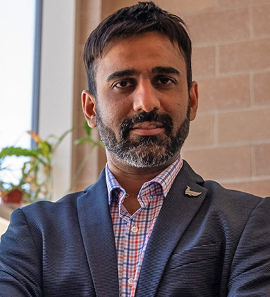

Materials Science & Engineering
Assistant Professor · NC State University
Exploring how materials behave under extreme environments — bridging solid-state processing, phase transformations, and atomic-scale characterization to engineer next-generation alloys and composites.

I am an Assistant Professor in the Department of Materials Science & Engineering at North Carolina State University, with affiliations in Nuclear Engineering and the Center for Additive Manufacturing and Logistics (CAMAL). I lead the LAMaRC — Lab for Agile Manufacturing & Characterization.
My research integrates non-equilibrium solid-state processing, phase transformations in complex concentrated alloys, advanced magnetic materials, nuclear materials degradation, and energy storage systems. I combine mechanistic materials science with advanced processing to design microstructures that enable multifunctional performance under extreme environments.
Before NC State, I served as a Senior Materials Scientist at Pacific Northwest National Laboratory (PNNL), where I managed >$600k/year in funded research. My journey began with three years in India's steel industry at SAIL and Jindal Stainless, which grounded my research in real-world manufacturing challenges.
The Lab for Agile Manufacturing and Rapid Characterization spans synthesis, sample preparation, advanced characterization, and mechanical testing. In-house resources are complemented by institutional facilities at NC State.
Friction stir processing & consolidation, high-pressure torsion setup, cold rolling, ball milling, and powder compaction for solid-state alloy synthesis.
Muffle furnaces (1000–1800 °C), controlled environment furnace, arc melters, lab-scale sand casting, TGA/DSC, autoclave, and glove box.
Mechanical testing systems, thermo-mechanical & dynamic mechanical analysis, mounting press, polishing wheels, vibromet, and fume hood.
Elucidating ordering-induced phase stability transitions, planar-slip-driven strain hardening, and defect-mediated nucleation in high-entropy alloys.
Developing friction-based and shear-assisted processing as non-equilibrium routes to control microstructure, induce local chemical ordering, and tailor phase stability.
Single-step thermo-mechano-chemical routes for bulk permanent magnet manufacturing via solid-state consolidation of SmCo and composite systems.
Mechanistic understanding of zirconium alloy oxidation, irradiation effects, and selective corrosion through in-situ microscopy and atom probe tomography.
Nanoscale assessment of battery and supercapacitor materials, including solid-state Li-S batteries and high-performance electrocatalysts.
Friction-extruded copper-graphene composites with unprecedented electrical performance, and Al/SmCo structural-magnetic composites.